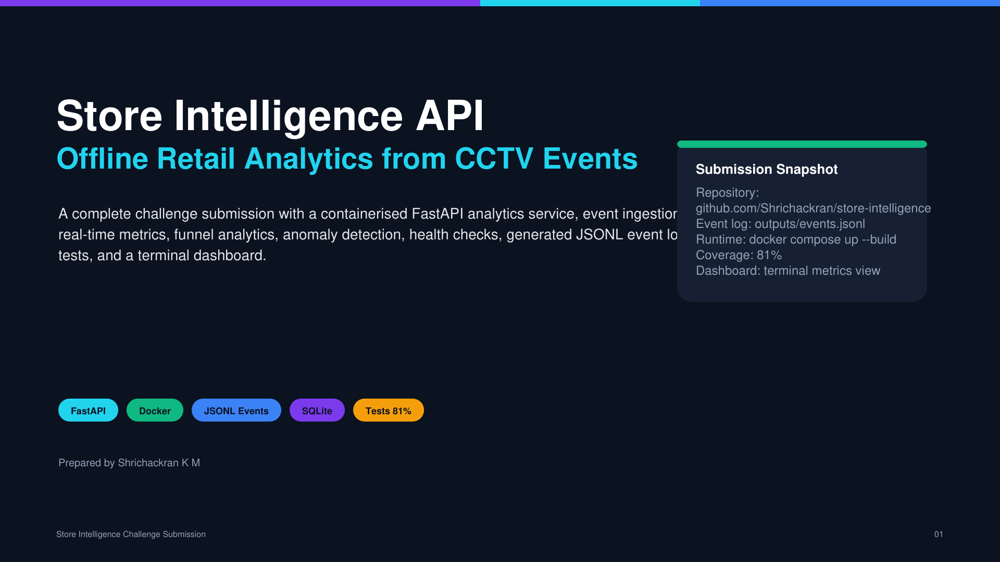
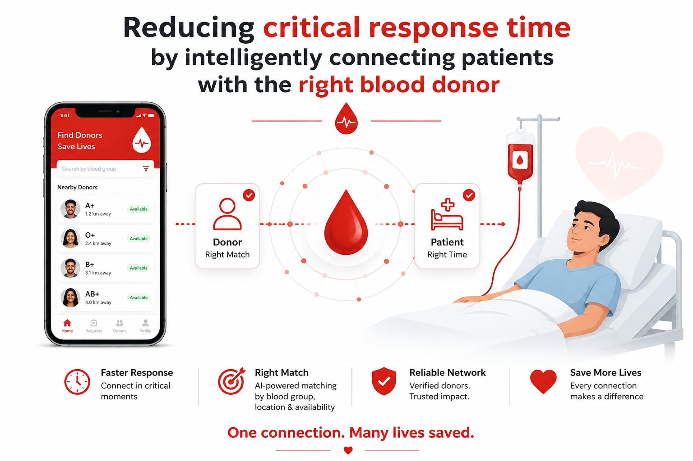
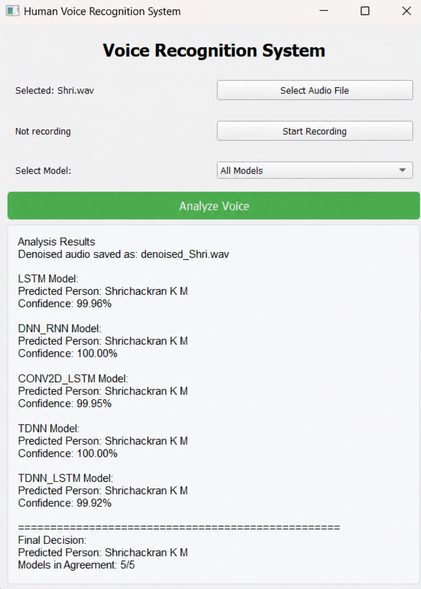
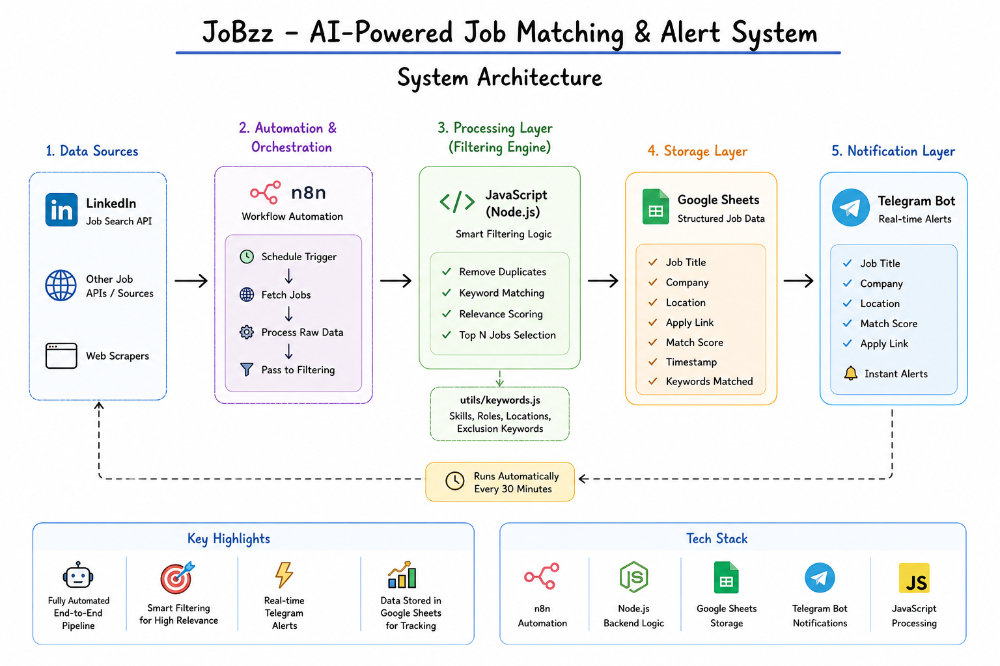

Languages
Java, Python, JavaScript, C++, SQL, HTML, CSS
LOADING
0%
Software Developer • Backend • Full Stack • AI/ML
I build production-style software with clean APIs, reliable backend flows, and AI-powered features. My work combines Java, Python, full-stack development, REST APIs, computer vision, automation, and practical deployment.
About
I’m an Electronics and Communication Engineering graduate from SASTRA University with a minor specialization in Programming and Application Development. I enjoy building systems that are easy to test, easy to explain, and useful beyond a demo screen.
My strongest areas are backend APIs, full-stack applications, AI/ML workflows, automation pipelines, and project execution under real constraints.
Tech Stack
Java, Python, JavaScript, C++, SQL, HTML, CSS
React.js, Node.js, Express.js, FastAPI, TensorFlow, PyTorch, NumPy, Pandas, Flutter
MySQL, SQLite, query optimization, schema design, API-backed data persistence
Docker, Kubernetes, AWS, Azure, GCP, Render, Git, GitHub, Vercel
LLMs, LangChain, RAG, GenAI, NLP, Computer Vision, YOLOv8n, Claude API
n8n, Agentic AI, REST API Design, Workflow Automation, Postman, Android Studio
OOP, Data Structures, Algorithms, DBMS, Operating Systems, Computer Networks, SDLC, Debugging
Git Version Control, Unit Testing, API Testing, Deployment, clean documentation
Projects

Real-time CCTV retail analytics pipeline using YOLOv8n and ByteTrack, served through a FastAPI backend with SQLite persistence, Docker deployment, metrics, funnel analytics, heatmaps, and anomaly APIs.

Full-stack RESTful web application for real-time blood donor matching with location filtering, emergency-priority logic, optimized MySQL queries, Express APIs, and responsive UI.

AI-native speech workflow combining neural audio denoising, TensorFlow/PyTorch inference, LLM-based transcription, structured prompts, and modular output standardization.

Agentic automation pipeline integrating LinkedIn, Google Sheets, Telegram APIs, keyword filtering, and real-time job discovery alerts through n8n workflows.
Experience
Jun 2025 – Jul 2025 • Salem, Tamil Nadu
Education
SASTRA Deemed University, Thanjavur, Tamil Nadu
CGPA: 7.96/10 • Oct 2022 – Jun 2026
Minor: Programming and Application Development
Focus Areas
REST API design, backend engineering, full-stack development, AI/ML systems, automation workflows, Dockerized deployments, and practical software testing.
Contact
If you’re hiring for Software Developer, Backend Developer, Full-Stack Developer, or AI/ML Engineer roles, I’d be happy to connect.